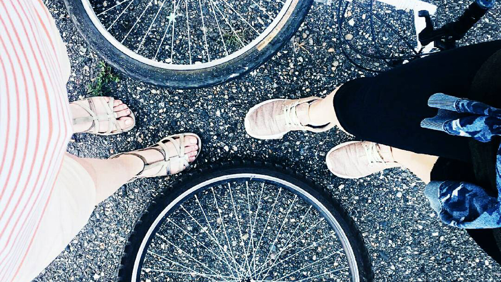

A bike that is rhe right size for you should have about 3 cm between the crossbar of the frame and yourself when you are standing with both feet of the ground - a bit more for BMX or mounntain bikes. Girls have to imagine where a crossbar would be - between the post for the handlebars and the seat.
Not everyone knows how useful for our body is to ride a bicycle. Most people spend hours these days in front of computer screens, which is not healthy at all. Riding a bicycle has a number of benefits. First of all, it's the time spent in the fresh air. It's especially good when cycling is outside the city, for example, cross-country cycling or mountain biking. Secondly, when we cycle we make our legs stronger, improve the overall endurance and respiratory system. Thirdly, riding a bike one can save lots of money, which would be spent on city transportation of car fuel. Besides, bicycles keep our environment in good ecological shape. Many cities are now being supplied by special cycling lanes. As it's been already mentioned, riding a bike has many health benefits, such as preventing vascular dystonia, increasing immunity, enriching blood with oxygen, reducing the risk of myopia, relieving stress, etc. One of the obvious things is the improved mood. Many people note that after regular cycling they feel much better not only physically, but also morally. It is especially great if there is a friend who supports and enjoys riding as much as you. Bicycle is highly recommended to those who want to lose weight. It is important to remember that cycling takes up lots of energy, so the balance can be restored by drinking plenty of water. In my opinion, the only danger connected with bicycles is the risk of frequent falls. To avoid them it's good to check regularly the status of the brakes and tires.